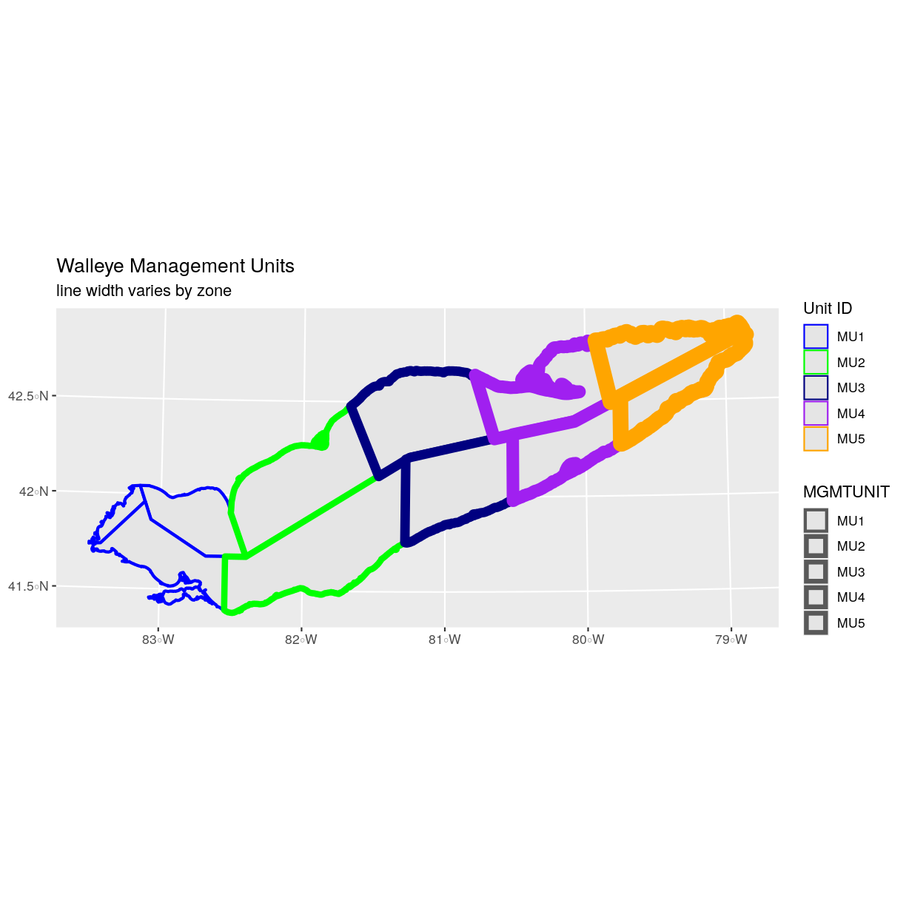

Explore and Plot by Shapefile Attributes
Overview
Teaching: 40 min
Exercises: 20 minQuestions
How can I compute on the attributes of a spatial object?
Objectives
Query attributes of a spatial object.
Subset spatial objects using specific attribute values.
Plot a shapefile, colored by unique attribute values.
Things You’ll Need To Complete This Episode
See the lesson homepage for detailed information about the software, data, and other prerequisites you will need to work through the examples in this episode.
This episode continues our discussion of shapefile attributes and covers how to work with shapefile attributes in R. It covers how to identify and query shapefile attributes, as well as how to subset shapefiles by specific attribute values. Finally, we will learn how to plot a shapefile according to a set of attribute values.
Load the Data
We will continue using the sf, raster and ggplot2 packages in this episode. Make sure that you have these packages loaded. We will
continue to work with the three shapefiles that we loaded in the
Open and Plot Shapefiles in R episode.
Query Shapefile Metadata
As we discussed in the Open and Plot Shapefiles in R episode, we can view metadata associated with an R object using:
st_geometry_type()- The type of vector data stored in the object.nrow()- The number of features in the objectst_bbox()- The spatial extent (geographic area covered by) of the object.st_crs()- The CRS (spatial projection) of the data.
We started to explore our erie_outline object in the previous episode. Here, we will look at a more complex object representing Lake Erie management zones.
erie_zones <- st_read("data/erie_zones.shp")
Reading layer `erie_zones' from data source `/home/jose/Documents/Science/Workshops/2020-02_glatos/glatos-spatial_workshop_materials/_episodes_rmd/data/erie_zones.shp' using driver `ESRI Shapefile'
Simple feature collection with 11 features and 8 fields
geometry type: POLYGON
dimension: XY
bbox: xmin: 292076.1 ymin: 4582052 xmax: 675959 ymax: 4751574
epsg (SRID): NA
proj4string: +proj=utm +zone=17 +ellps=GRS80 +units=m +no_defs
To see a summary of all of the metadata associated with our erie_zones object, we can view the object with View(erie_zones) or print a summary of the object itself to the console.
erie_zones
Simple feature collection with 11 features and 8 fields
geometry type: POLYGON
dimension: XY
bbox: xmin: 292076.1 ymin: 4582052 xmax: 675959 ymax: 4751574
epsg (SRID): NA
proj4string: +proj=utm +zone=17 +ellps=GRS80 +units=m +no_defs
First 10 features:
OBJECTID NAME SQ_KM HECTARES ACRES MGMTUNIT Shape_Leng Shape_Area
1 1 Mich. 323.4672 32346.73 79928.76 MU1 1.996955 0.03514546
2 2 OE-5 1764.0675 176406.75 435901.07 MU5 2.665866 0.19481404
3 3 OE-1 1565.6603 156566.03 386874.66 MU1 1.931562 0.16991382
4 4 O-1 1975.1655 197516.55 488063.40 MU1 4.927572 0.21340517
5 5 OE-2 3556.8141 355681.41 878888.76 MU2 3.153808 0.38810201
6 6 O-2 4532.7467 453274.67 1120041.71 MU2 3.820894 0.48906958
7 7 OE-3 3383.3656 338336.56 836029.63 MU3 2.594871 0.37061446
8 8 O-3 2740.7223 274072.23 677232.49 MU3 2.490809 0.29805226
9 9 OE-4 2507.6910 250769.10 619650.44 MU4 3.720807 0.27520295
10 10 Penn. 1969.0486 196904.86 486551.90 MU4 2.717525 0.21485187
geometry
1 POLYGON ((324940.2 4647311,...
2 POLYGON ((670839.7 4751554,...
3 POLYGON ((322074.6 4656546,...
4 POLYGON ((295773.4 4622956,...
5 POLYGON ((374929.3 4640631,...
6 POLYGON ((371024 4584031, 3...
7 POLYGON ((445085.4 4702716,...
8 POLYGON ((476645.9 4623456,...
9 POLYGON ((587978.5 4741264,...
10 POLYGON ((539843.7 4647691,...
We can use the ncol function to count the number of attributes associated with a spatial object too. Note that the geometry is just another column and counts towards the total.
ncol(erie_zones)
[1] 9
We can view the individual name of each attribute using the
names() function in R:
names(erie_zones)
[1] "OBJECTID" "NAME" "SQ_KM" "HECTARES" "ACRES"
[6] "MGMTUNIT" "Shape_Leng" "Shape_Area" "geometry"
We could also view just the first 6 rows
of attribute values using the head() function to get a preview of the data:
head(erie_zones)
Simple feature collection with 6 features and 8 fields
geometry type: POLYGON
dimension: XY
bbox: xmin: 292076.1 ymin: 4582052 xmax: 670839.7 ymax: 4751574
epsg (SRID): NA
proj4string: +proj=utm +zone=17 +ellps=GRS80 +units=m +no_defs
OBJECTID NAME SQ_KM HECTARES ACRES MGMTUNIT Shape_Leng Shape_Area
1 1 Mich. 323.4672 32346.73 79928.76 MU1 1.996955 0.03514546
2 2 OE-5 1764.0675 176406.75 435901.07 MU5 2.665866 0.19481404
3 3 OE-1 1565.6603 156566.03 386874.66 MU1 1.931562 0.16991382
4 4 O-1 1975.1655 197516.55 488063.40 MU1 4.927572 0.21340517
5 5 OE-2 3556.8141 355681.41 878888.76 MU2 3.153808 0.38810201
6 6 O-2 4532.7467 453274.67 1120041.71 MU2 3.820894 0.48906958
geometry
1 POLYGON ((324940.2 4647311,...
2 POLYGON ((670839.7 4751554,...
3 POLYGON ((322074.6 4656546,...
4 POLYGON ((295773.4 4622956,...
5 POLYGON ((374929.3 4640631,...
6 POLYGON ((371024 4584031, 3...
Challenge: Attributes for Different Spatial Classes
Explore the attributes associated with the
erie_zonesspatial object.
- How many attributes does it have?
Which of the following is NOT an attribute of the
erie_outlinedata object?A) NAME B) MGMTUNIT C) MGMTZONE
Answers
1) To find the number of attributes, we use the
ncol()function:ncol(erie_zones)[1] 92) To see a list of all of the attributes, we can use the
names()function:names(erie_zones)[1] "OBJECTID" "NAME" "SQ_KM" "HECTARES" "ACRES" [6] "MGMTUNIT" "Shape_Leng" "Shape_Area" "geometry"“MGMTZONE” is not an attribute of this object.
Explore Values within One Attribute
We can explore individual values stored within a particular attribute.
Comparing attributes to a spreadsheet or a data frame, this is similar
to exploring values in a column. For spatial objects, we can use the syntax: objectName$attributeName.
We can see the contents of the MGMTUNIT field of our vector object:
erie_zones$MGMTUNIT
[1] MU1 MU5 MU1 MU1 MU2 MU2 MU3 MU3 MU4 MU4 MU5
Levels: MU1 MU2 MU3 MU4 MU5
To see only unique values within the MGMTUNIT field, we can use the
levels() function for extracting the possible values of a
categorical variable. The special term for categorical variables
within R is factor.
levels(erie_zones$MGMTUNIT)
[1] "MU1" "MU2" "MU3" "MU4" "MU5"
Subset Shapefiles
We can use the filter() function from dplyr to select a subset of features
from a spatial object in R, just like with data frames.
For example, we might be interested only in features that are of MGMTUNIT “MU5”. Once we subset out this data, we can use it as input to other code so that code only operates on the MU5 management zones.
zone_5 <- erie_zones %>%
dplyr::filter(MGMTUNIT == "MU5")
nrow(zone_5)
[1] 2
Our subsetting operation reduces the features count to 2. This means
that only two feature polygons in our spatial object have the attribute
MGMTUNIT == MU5. We can plot only these polygons:
ggplot() +
geom_sf(data = zone_5) +
ggtitle("Walleye Management Units", subtitle = "Zone 5") +
coord_sf()
There are two features in our subset. Why does the plot look like
there is only one feature? Let’s adjust the colors used in our plot. If we have
2 features in our vector object, we can plot each using a unique color by
assigning a column name to the color aesthetic (color =). We use the syntax
aes(color = ) to do this. We can also alter the default line thickness by
using the size = parameter, as the default value of 0.5 can be hard to see.
Note that size is placed outside of the aes() function, as we are not
connecting line thickness to a data variable.
ggplot() +
geom_sf(data = zone_5, aes(color = factor(OBJECTID)), size = 1.5) +
labs(color = 'Polygon ID') +
ggtitle("Walleye Management Units", subtitle = "Zone 5") +
coord_sf()
Now, we see that there are in fact two features in our plot!
Challenge: Subset Spatial Objects Part 1
Subset out all
erie_zonesthat have an area greater than 3000 square kilometers and plot it.Answers
First we will filter our object by the SQ_KM attribute:
erie_zones_big <- erie_zones %>% dplyr::filter(SQ_KM > 3000)Let’s check how many features there are in this subset:
nrow(erie_zones_big)[1] 3Now let’s plot that data:
ggplot() + geom_sf(data = erie_zones_big, size = 1.5) + ggtitle("Big Management Zones") + coord_sf()

Customize Plots
In the examples above, ggplot() automatically selected colors for
each line based on a default color order. If we don’t like those
default colors, we can create a vector of colors - one for each
feature. To create this vector we can use the following syntax:
c("color_one", "color_two", "color_three")[object$factor]
Note in the above example we have
- a vector of colors - one for each factor value (unique attribute value)
- the attribute itself (
[object$factor]) of class factor.
First we will check how many unique levels our factor has:
levels(erie_zones$MGMTUNIT)
[1] "MU1" "MU2" "MU3" "MU4" "MU5"
Then we can create a pallet of four colors, one for each feature in our vector object.
zone_colors <- c("blue", "green", "navy", "purple", "orange")
We can tell ggplot to use these colors when we plot the data.
ggplot() +
geom_sf(data = erie_zones, aes(color = MGMTUNIT)) +
scale_color_manual(values = zone_colors) +
labs(color = 'Unit ID') +
ggtitle("Walleye Management Units", subtitle = "colored by zone") +
coord_sf()

Adjust Line Width
We adjusted line width universally earlier. If we want a unique line width for each factor level or attribute category in our spatial object, we can use the same syntax that we used for colors, above.
We already know that we have five different MGMTUNIT levels in the erie_zones object, so we will set five different line widths.
line_widths <- c(1, 2, 3, 4, 5)
We can use those line widths when we plot the data.
ggplot() +
geom_sf(data = erie_zones, aes(color = MGMTUNIT, size = MGMTUNIT)) +
scale_color_manual(values = zone_colors) +
labs(color = 'Unit ID') +
scale_size_manual(values = line_widths) +
ggtitle("Walleye Management Units", subtitle = "line width varies by zone") +
coord_sf()

Challenge: Plot Line Width by Attribute
In the example above, we set the line widths to be 1, 2, 3, and 4. Because R orders factor levels alphabetically by default, this gave us a plot where zone 5 (the last factor level) was the thickest and zone 1 was the thinnest.
Let’s create another plot where we show the different line types with the following thicknesses:
- zone 1 = 6
- zone 2 = 1
- zone 3 = 3
- zone 4 = 2
- zone 5 = 1
Answers
First we need to look at the levels of our factor to see what order the road types are in:
levels(erie_zones$MGMTUNIT)[1] "MU1" "MU2" "MU3" "MU4" "MU5"We then can create our
line_widthvector setting each of the levels to the desired thickness.line_width <- c(6, 1, 3, 2, 1)Now we can create our plot.
ggplot() + geom_sf(data = erie_zones, aes(size = MGMTUNIT)) + scale_size_manual(values = line_width) + ggtitle("Walleye Management Units", subtitle = "line width varies by zone manually") + coord_sf()

Add Plot Legend
We can add a legend to our plot too. When we add a legend, we use the following elements to specify labels and colors:
bottomright: We specify the location of our legend by using a default keyword. We could also usetop,topright, etc.levels(objectName$attributeName): Label the legend elements using the categories of levels in an attribute (e.g., levels(erie_zones$MGMTUNIT) means use the levels boardwalk, footpath, etc).fill =: apply unique colors to the boxes in our legend.palette()is the default set of colors that R applies to all plots.
Let’s add a legend to our plot. We will use the zone_colors object
that we created above to color the legend. We can customize the
appearance of our legend by manually setting different parameters.
ggplot() +
geom_sf(data = erie_zones, aes(color = MGMTUNIT), size = 1.5) +
scale_color_manual(values = zone_colors) +
labs(color = 'Zone ID') +
ggtitle("Walleye Management Units", subtitle = "default legend") +
coord_sf()

new_colors <- c("springgreen", "blue", "magenta", "orange", "rosybrown")
ggplot() +
geom_sf(data = erie_zones, aes(color = MGMTUNIT), size = 1.5) +
scale_color_manual(values = new_colors) +
labs(color = 'Zone ID') +
ggtitle("Walleye Management Units", subtitle = "pretty colors") +
coord_sf()

Data Tip
You can modify the default R color palette using the palette method. For example
palette(rainbow(6))orpalette(terrain.colors(6)). You can reset the palette colors usingpalette("default")!
Challenge: Plot Lines by Attribute
- Create a map of Lake Erie bathymetry contours using the data located in your downloaded data folder:
erie_contours.shp. Apply a color to contour using itsdepth_mvalue. Add a legend.Answers
First we read in the data:
erie_contours <- st_read("data/erie_contours.shp") Now we can create our plot:Error: <text>:3:5: unexpected symbol 2: 3: Now we ^ggplot() + geom_sf(data = erie_contours, aes(color = depth_m), size = 1) + ggtitle("Lake Erie Bathymetry") + coord_sf()Error in fortify(data): object 'erie_contours' not found
Key Points
Spatial objects in
sfare similar to standard data frames and can be manipulated using the same functions.Almost any feature of a plot can be customized using the various functions and options in the
ggplot2package.